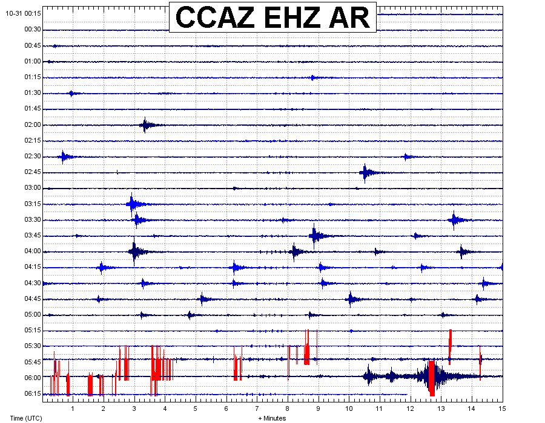

October 31, 2009
Halloween Earthquake Swarm near Sunset Crater, AZ
In the early morning hours of October 31, 2009 (UTC), a series of micro-earthquakes occurred in a region approximately 15 miles northeast of Flagstaff, Arizona near Sunset Crater National Monument. The Arizona Earthquake Information Center has identified over 100 micro earthquakes and has satisfactorily located about two dozen events occurring over a time span of six hours. The depths of the well located earthquakes are within the mid-crust and range from 17 km to 27 km. The largest events where of duration magnitude (Md) 2.5 and would not have been felt by local residents. The majority of the events had duration magnitudes less than 2.0, and the location of these events cannot be determined with the available data. However, these smaller earthquakes are thought to have occurred in the vicinity of the larger events.
Historically, earthquakes of this frequency and depth are uncommon. Because, of the anomalous nature of this earthquake swarm, the AEIC is currently investigating this swarm with further research.
